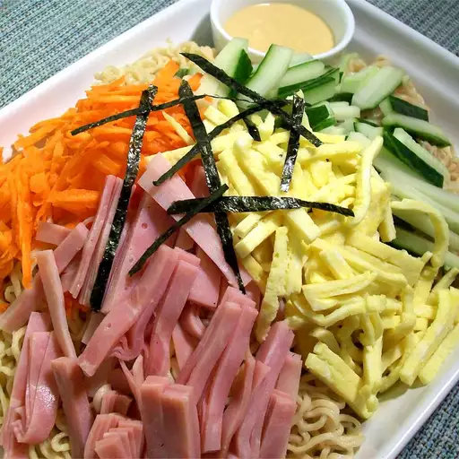

Hiyashi Chuka Noodles:

ingredients:
- 5 tablespoons chicken stock
- 3 tablespoons soy sauce
- 3 tablespoons white vinegar
- 2 tablespoons white sugar
- 1 teaspoon sesame oil
- ½ teaspoon chili oil (Optional)
- 2 (3 ounce) packages ramen noodles
- 1 large egg, beaten
- 1 slice cooked ham, cut into thin strips
- 1 carrot, grated
- ½ cucumber, julienned
- ¼ sheet nori, cut into thin slices
- 1 tablespoon hot Chinese mustard (Optional)
Directions:
step1
Combine chicken stock, soy sauce, vinegar, sugar, sesame oil, and chili oil in a small bowl, stirring until sugar dissolves.
step2
Bring a saucepan of water to a boil. Cook ramen noodles in the boiling water for 2 minutes. Drain immediately; refrigerate noodles until cold.
step3
Meanwhile, heat a small nonstick skillet over medium heat. Pour in beaten egg and tilt the skillet until egg thinly coats the bottom of the skillet and is firm; fold egg in half and remove from the skillet. Slice cooked egg into thin strips.
step4
Divide cold noodles between serving plates; top with separate piles egg, ham, carrot, and cucumber. Pour soy sauce mixture over top; sprinkle with nori. Serve with hot mustard on the side.